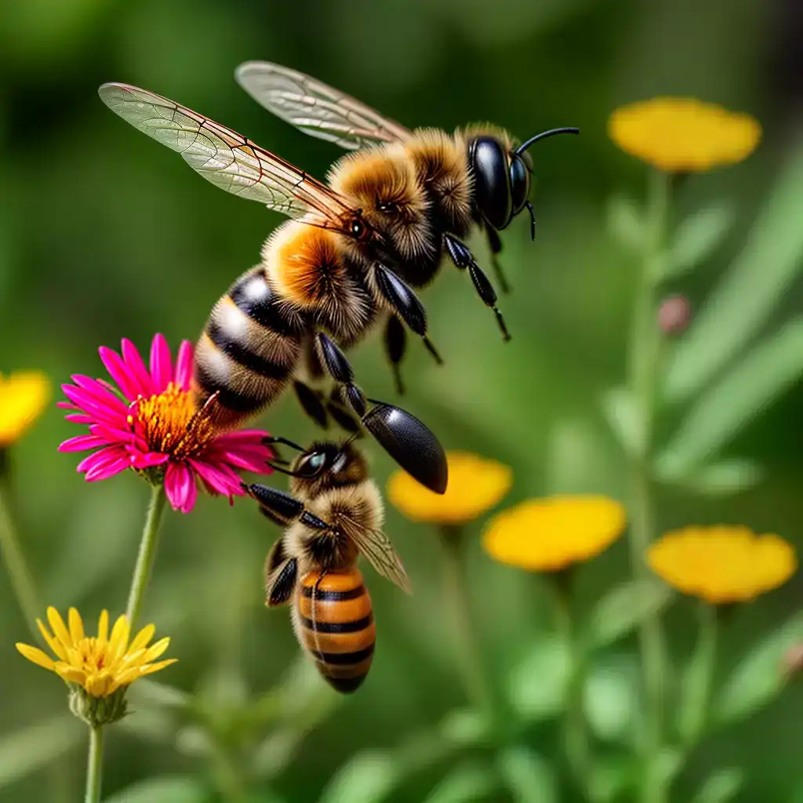
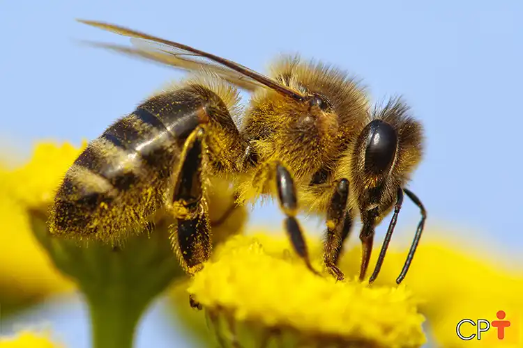

Abelhas são insetos voadores, conhecidos pelo seu importante papel na polinização. As espécies de abelhas nativas das Américas e Oceania são conhecidas como abelhas sem ferrão e possuem ferrão atrofiado, sendo, portanto, menos agressivas. As abelhas com ferrão encontradas comumente no Brasil são espécies híbridas de abelhas europeias e africanas, criadas para maior produtividade e resistência.
90% das plantas precisam de um agente externo para fazer a polinização cruzada, e, somente com a polinização, vai haver a produção de frutos e de sementes
Há mais de 25 000 espécies de abelhas conhecidas em sete famílias biológicas reconhecidas. Elas são encontradas em todos os continentes, exceto a Antártida, em todos os habitats do planeta onde existam plantas de flores polinizadas por insetos. Existem abelhas que vivem socialmente em colônias e também existem abelhas solitárias, ambas importantíssimas para o equilíbrio ambiental.
A apicultura tem sido praticada há milênios, desde pelo menos os tempos do Antigo Egito e da Grécia Antiga. Além do mel e da polinização, as abelhas produzem cera de abelha, geléia real e própolis. As abelhas têm aparecido na mitologia e folclore, através de todas as fases da arte e da literatura, desde os tempos antigos até os dias atuais.
“Se as abelhas fossem extintas, o mundo acabaria em alguns anos.”
Elas estão adaptadas a uma alimentação de néctar e pólen, o primeiro principalmente como uma fonte de energia e os últimos principalmente pelas proteínas e outros nutrientes.
As abelhas variam em tamanho desde minúsculas espécies de abelhas sem ferrão cujas obreiras são inferiores a 2 mm de comprimento, como a Perdita Minima, até à Chalicodoma Plutão, a maior espécie de abelha cortadeira, cujas fêmeas podem atingir um comprimento de 39 mm.